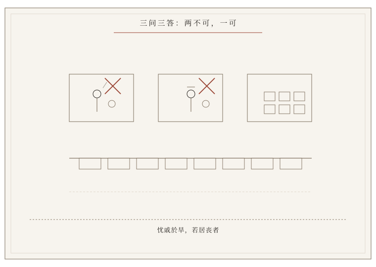

檀弓下 · 四·九十一 · 第 416 课
岁旱，穆公召县子而问然，曰：「天久不雨，吾欲暴尫而奚若？」曰：「天久不雨，而暴人之疾子，虐，毋乃不可与？」「然则吾欲暴巫而奚若？」曰：「天则不雨，而望之愚妇人，於以求之，毋乃已疏乎？」「徙市则奚若？」曰：「天子崩，巷市七日；诸侯薨，巷市三日。为之徙市，不亦可乎？」
说什么事：年成旱，鲁穆公召县子问。问：「久不下雨，我想把尫者（仰面求雨的残病人）晒在日下，如何？」答：「久不下雨，却晒有疾之人，是虐，怕不可。」「那么晒巫？」答：「天既不下雨，却指望愚妇人，用这个求雨，不太疏远了吗？」「迁市呢？」答：「天子崩，巷市七日；诸侯薨，巷市三日。为旱而迁市，不也可以吗？」
落在哪一层：以「求雨不可加害于人」为界。三问，两不可，一可。
为何编在此位：上是「过礼亦伪」，此是「过求亦虐」。一矫其情，一虐其人。
【经】岁旱，穆公召县子而问然，曰：「天久不雨，吾欲暴尫而奚若？」曰：「天久不雨，而暴人之疾子，虐，毋乃不可与？」「然则吾欲暴巫而奚若？」曰：「天则不雨，而望之愚妇人，於以求之，毋乃已疏乎？」「徙市则奚若？」曰：「天子崩，巷市七日；诸侯薨，巷市三日。为之徙市，不亦可乎？」
【注】然之言焉也。凡穆或作缪。／奚若，何如也。尫者，面乡天，觊天哀而雨之。／锢疾，人之所哀，暴之是虐。／已犹甚也。巫主接神，亦觊天哀而雨之。《春秋传》说巫曰：「在女曰巫，在男曰觋。」《周礼·女巫》：「旱则舞雩。」／徙市者，庶人之丧礼。今徙市，是忧戚於旱若丧。
【疏】此一节论岁旱变之事。○「望之愚妇人，於以求之，毋乃已疏乎」。○县子云：天道远，人道近。天则不雨，而望於愚鄙之妇人，欲以暴之，以求其雨。已，甚也。无乃甚疏远於求雨道理乎？言甚疏远於道理矣。○注「《春秋》」至「曰觋」。○正义曰：所引《春秋传》者，《外传·楚语》昭王问观射父绝地通天之事。观射父对云：「民之精爽不携贰者，明神降之，在男曰觋，在女曰巫。」然案《楚语》「精爽不携贰者」始得为巫，此经而云「愚妇人」者，据末世之巫，非复是精爽不携贰之巫也。○注「徙市者，庶人之丧礼」。○正义曰：今徙市是忧戚於旱，若居天子诸侯之丧，必巷市者，以庶人忧戚，无复求賝财利，要有急须之物不得不求，故於邑里之内而为巷市。
岁旱 年成旱。
穆公 鲁穆公。注云「凡穆或作缪」。
县子 鲁人，名琐，时称县子。
问然 注云「然之言焉也」。问焉，问此事。
暴尫 暴，晒于日下。尫，注云「面乡天，觊天哀而雨之」。
奚若 何如。
疾子 有锢疾之人。
虐 残害。
暴巫 晒巫。巫主接神。
已疏 已，甚也。太疏远。
徙市 迁市于巷。
巷市 巷中为市。庶人之丧礼。
年成旱，鲁穆公召县子问。说：「久不下雨，我想把尫者晒在日下，如何？」答：「久不下雨，却晒有疾之人，是虐，怕不可。」「那么晒巫？」答：「天既不下雨，却指望愚妇人，用这个求雨，不太疏远了吗？」「迁市呢？」答：「天子崩，巷市七日；诸侯薨，巷市三日。为旱而迁市，不也可以吗？」
此章三问，三答，只一字之差。
暴尫曰「虐」，暴巫曰「疏」，徙市曰「可」。
三答之中，一条线渐渐清楚：不可加害于人，可以自苦。
第一层 三问之序 先问最烈者，次问次烈者，末问最轻者。
穆公之问，其实是「我最多能做到哪一步」。 县子之答，把这条线一步一步往回拉。
第二层 「暴尫」何以不可 注云「锢疾，人之所哀，暴之是虐」。
以大旱之故，晒一个残病人于日下——此即以人为牲。
礼不许以人代天。
第三层 「暴巫」何以不可 注云「巫主接神，亦觊天哀而雨之」。
县子不说「巫无用」，说「愚妇人」——疏云「据末世之巫，非复精爽不携贰之巫」。
他不是否认神，是承认此辈已不足托。 疏云「天道远，人道近」。
第四层 「徙市」何以可 注云「徙市者，庶人之丧礼。今徙市，是忧戚於旱若丧」。
迁市不是求雨之术，是举国自贬如居丧。 疏云「庶人忧戚，无复求賝财利」。
此即礼之所许：不能改天，可以改己。
第五层 「天子崩七日、诸侯薨三日」 此为巷市之数。
旱灾比于君丧。 不是僭，是「忧戚」同其等。
第六层 三答的分寸 一个「虐」，一个「疏」，一个「可」。
县子不劝其无为，也不许其为恶。 他只给一条可行的路。
第七层 此章之分寸 求于天者，不可害于人；自苦者，礼所不禁。
与今日何干 今之治事者，遇急则易以人为代价。
此章给一句：急时最能看出，什么是不可以拿来换的。
| 左 | 右 |
|---|---|
| 岁旱 | 天久不雨 |
| 暴尫 | 晒残病人 |
| 虐 | 不可 |
| 暴巫 | 晒愚妇人 |
| 已疏 | 甚远于理 |
| 徙市 | 庶人之丧礼 |
| 巷市七日 | 天子崩 |
| 巷市三日 | 诸侯薨 |
| 忧戚若丧 | 礼所许 |
画一幅极简的旱年问对场景，视点平视。画面上方不画云，只留空白，正中偏左画一个低垂的日轮（一个空心圆，下半被一道短横压住）。下方一条水平地面线。左侧站一位戴冠的君主，身形宽袍，右手抬起向外指。右侧站一位老者，身形清瘦，双手拱于胸前。两人之间地面画三件小物：一个仰面的人形（头后仰，一条短线指向天）、一个身形略矮的人形（头戴小冠）、一条并排的小方框（示市）。不画文字。赭色只用在那三个小方框上。
